1 基于K8S安装部署Runner
配置Chart存储库
helm repo add gitlab https://charts.gitlab.io
helm repo list
$ helm repo list | grep gitlab
gitlab https://charts.gitlab.io
helm search repo -l gitlab/gitlab-runner
helm fetch gitlab/gitlab-runner --version=0.44.0
tar zxvf gitlab-runner-0.44.0.tgz
$ tree gitlab-runner
gitlab-runner
├── CHANGELOG.md
├── CONTRIBUTING.md
├── Chart.yaml
├── LICENSE
├── Makefile
├── NOTICE
├── README.md
├── templates
│ ├── NOTES.txt
│ ├── _cache.tpl
│ ├── _env_vars.tpl
│ ├── _helpers.tpl
│ ├── configmap.yaml
│ ├── deployment.yaml
│ ├── hpa.yaml
│ ├── role-binding.yaml
│ ├── role.yaml
│ ├── secrets.yaml
│ ├── service-account.yaml
│ ├── service-session-server.yaml
│ ├── service.yaml
│ └── servicemonitor.yaml
└── values.yaml
1 directory, 22 files
更新配置信息
values.yaml
image:
registry: registry.gitlab.com
image: gitlab-org/gitlab-runner
# tag: alpine-v11.6.0
## 镜像下载策略
imagePullPolicy: IfNotPresent
## Gitlab服务器地址
gitlabUrl: http://127.0.0.1:32220
## runner注册token
runnerRegistrationToken: "nzTshoYwsnCttkyzZBxE"
## 终止之前注销所有跑步者
unregisterRunner: true
## 当停止管道时等待其作业终止时间
terminationGracePeriodSeconds: 3600
## 配置最大井发作业数
concurrent: 10
## 新作业检查间隔
checkInterval: 30
## GitlabRunner日志级别 debug, info, warn, error, fatal, panic
logLevel: info
sessionServer:
enabled: false
## For RBAC support:
rbac:
create: true
resources: ["pods", "pods/exec", "secrets"]
verbs: ["get", "list", "watch", "create", "patch", "delete"]
podSecurityPolicy:
enabled: false
resourceNames:
- gitlab-runner
metrics:
enabled: true
portName: metrics
port: 9252
serviceMonitor:
enabled: false
service:
enabled: false
type: ClusterIP
locked: false
tags: "kubernetes-runner, k8s"
未创建rbac
ERROR: Job failed (system failure): pods is forbidden: User "system:serviceaccount:gitlab-runner:default" cannot create resource "pods" in API group in the namespace "gitlab-runner"
$ kubectl create ns gitlab-runner
namespace/gitlab-runner created
部署 chart
helm3 template --dry-run k8s-runner gitlab-runner/ -n devops
$ helm3 install gitlab-runner gitlab-runner/ -n devops
NAME: gitlab-runner
LAST DEPLOYED: Fri Aug 26 23:21:45 2022
NAMESPACE: devops
STATUS: deployed
REVISION: 1
TEST SUITE: None
NOTES:
Your GitLab Runner should now be registered against the GitLab instance reachable at: "http://127.0.0.1:32220"
Runner namespace "devops" was found in runners.config template.
helm upgrade gitlab-runner gitlab-runner -namespace devops
发布应用到K8S环境
运行流水线测试
image: maven:3.6.3-jdk-8
before_script:
- ls
services:
- name: mysql: latest
- alias: mysql-1
build:
image: maven: 3.6.3-jdk-8
stage: build
tags:
- k8s
script:
- ls
- sleep 2
- echo "mvn clean "
- sleep 10
deploy:
stage: deploy
tags:
- k8s
script:
- echo "deploy"
environment:
name: production
url: http://www.baidu.com
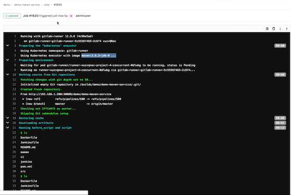
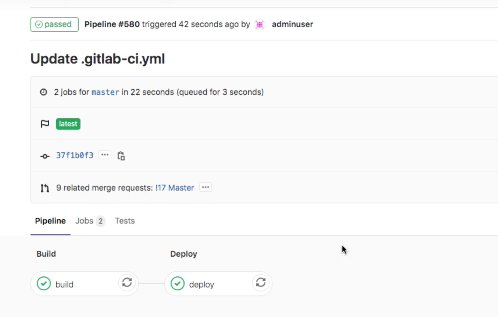
2 在 K8S 中发布应用
准备工作
kubectl create secret docker-registry cidevops
--docker-server=registry.cn-beijing.aliyuncs.com\
--docker-username=XXXX \
--docker-password=xxxx\
--docker-email=test@test.com -n cidevops
准备工作
创建名称空间
kubectl create ns cidevops
cidevops-gitlabci-service/jobs/deploy.yml
.deploy-k8s:
stage: deploy
tags:
- build
script:
- sed -i "s#__namespace__#${NAMESPACE}#g" deployment.yaml
- sed -i "s#__appname__#${APP_NAME}#g" deployment.yaml
- sed -i "s#__containerport__#${CONTAINER_PORT}#g" deployment.yaml
- sed -i "s#__nodeport__#${NODE_PORT}#g" deployment.yaml
- sed -i "s#__imagename__#${IMAGE_NAME}#g" deployment.yaml
- kubectl apply -f deployment.yaml
after_script:
- sleep 10
- kubectl get pod -n $NAMESPACE
cidevops-gitlabci-service/templates/k8s-java-pipeline.yml
stage: deploy
deploy_k8s:
stage: deploy
extends: .deploy-k8s
rules:
- if: " $RUN_DEPLOY == 'no' "
when: never
- if: " $MANUAL_BRANCH == 'master' "
when: manual
- when: always
environment:
name: $ENV_NAME
url: $ENV_URL
- 完整：
k8s-java-pipeline.yml
include:
- project: 'cidevops/cidevops-gitlabci-service'
ref: master
file: 'jobs/build.yml'
- project: 'cidevops/cidevops-gitlabci-service'
ref: master
file: 'jobs/test.yml'
- project: 'cidevops/cidevops-gitlabci-service'
ref: master
file: 'jobs/codeanalysis.yml'
- project: 'cidevops/cidevops-gitlabci-service'
ref: master
file: 'jobs/deploy.yml'
variables:
GIT_CLONE_PATH: $CI_BUILDS_DIR/builds/$CI_PROJECT_NAMESPACE/$CI_PROJECT_NAME/$CI_PIPELINE_ID
GIT_CHECKOUT: "false"
MVN_OPTS: "-Dmaven.repo.local=/home/gitlab-runner/m2"
BUILD_SHELL: 'mvn clean package -DskipTests -Dmaven.repo.local=/home/gitlab-runner/ci-build-cache/maven --settings=./settings.xml' ##构建命令
TEST_SHELL : 'mvn test -Dmaven.repo.local=/home/gitlab-runner/ci-build-cache/maven --settings=./settings.xml' ##测试命令
JUNIT_REPORT_PATH: 'target/surefire-reports/TEST-*.xml' ##单元测试报告
# 代码扫描
SCANNER_HOME : ""
SCAN_DIR : "src"
ARTIFACT_PATH : 'target/*.jar' ##制品目录
#上传制品库
ARTIFACTORY_URL: "http://192.168.1.200:30082/artifactory"
ARTIFACTORY_NAME: "cidevops"
TARGET_FILE_PATH: "$CI_PROJECT_NAMESPACE/$CI_PROJECT_NAME/$CI_COMMIT_REF_NAME-$CI_COMMIT_SHORT_SHA-$CI_PIPELINE_ID"
TARGET_ARTIFACT_NAME: "$CI_PROJECT_NAME-$CI_COMMIT_REF_NAME-$CI_COMMIT_SHORT_SHA-$CI_PIPELINE_ID.jar"
#构建镜像
CI_REGISTRY: 'registry.cn-beijing.aliyuncs.com'
CI_REGISTRY_USER: '610556220zy'
#CI_REGISTRY_PASSWD: 'xxxxxxxx.'
IMAGE_NAME: "$CI_REGISTRY/$CI_PROJECT_PATH:$CI_COMMIT_REF_NAME-$CI_COMMIT_SHORT_SHA-$CI_PIPELINE_ID"
DOCKER_FILE_PATH: "./Dockerfile"
#部署k8s
RUN_DEPLOY: "yes"
APP_NAME: "$CI_PROJECT_NAME"
CONTAINER_PORT: 8081
NODE_PORT: 30185
ENV_NAME: "staging"
ENV_URL: "http://192.168.1.200:30185"
NAMESPACE: "$CI_PROJECT_NAME-$CI_PROJECT_ID-$CI_ENVIRONMENT_SLUG"
image: docker:latest
stages:
- build
- test
- parallel01
- down_artifact
- deploy
- interface_test
before_script:
- ls /home/gitlab-runner/ci-build-cache/builds/
- echo $CI_BUILDS_DIR
- echo $KUBE_URL $KUBE_TOKEN $KUBE_CA_PEM $KUBE_CA_PEM_FILE
- export
build:
variables:
GIT_CHECKOUT: "true"
tags:
- k8s
image: maven:3.6.3-jdk-8
stage: build
extends: .build
rules:
- when: on_success
after_script:
- ls target/
test:
before_script:
- ls target/
tags:
- k8s
image: maven:3.6.3-jdk-8
stage: test
extends: .test
rules:
- when: on_success
after_script:
- ls target/
code_analysis:
tags:
- k8s
image: sonarsource/sonar-scanner-cli:latest
stage: parallel01
script:
- ls target/
- echo $CI_MERGE_REQUEST_IID $CI_MERGE_REQUEST_SOURCE_BRANCH_NAME $CI_MERGE_REQUEST_TARGET_BRANCH_NAME
- "sonar-scanner -Dsonar.projectKey=${CI_PROJECT_NAME} \
-Dsonar.projectName=${CI_PROJECT_NAME} \
-Dsonar.projectVersion=${CI_COMMIT_REF_NAME} \
-Dsonar.ws.timeout=30 \
-Dsonar.projectDescription=${CI_PROJECT_TITLE} \
-Dsonar.links.homepage=${CI_PROJECT_URL} \
-Dsonar.sources=${SCAN_DIR} \
-Dsonar.sourceEncoding=UTF-8 \
-Dsonar.java.binaries=target/classes \
-Dsonar.java.test.binaries=target/test-classes \
-Dsonar.java.surefire.report=target/surefire-reports \
-Dsonar.host.url=http://192.168.1.200:30090 \
-Dsonar.login=ee2bcb37deeb6dfe3a07fe08fb529559b00c1b7b \
-Dsonar.branch.name=${CI_COMMIT_REF_NAME}"
build_image:
before_script:
- ls target/
tags:
- k8s
image: docker:latest
services:
- name: docker:dind
stage: parallel01
extends: .build-docker
deploy_k8s:
image: lucj/kubectl:1.17.2
tags:
- k8s
- kubernetes-runner
stage: deploy
script:
- kubectl config set-cluster my-cluster --server=${KUBE_URL} --certificate-authority="${KUBE_CA_PEM_FILE}"
- kubectl config set-credentials admin --token=${KUBE_TOKEN}
- sed -i "s#__namespace__#${NAMESPACE}#g" deployment.yaml
- sed -i "s#__appname__#${APP_NAME}#g" deployment.yaml
- sed -i "s#__containerport__#${CONTAINER_PORT}#g" deployment.yaml
- sed -i "s#__nodeport__#${NODE_PORT}#g" deployment.yaml
- sed -i "s#__imagename__#${IMAGE_NAME}#g" deployment.yaml
- sed -i "s#__CI_ENVIRONMENT_SLUG__#${CI_ENVIRONMENT_SLUG}#g" deployment.yaml
- sed -i "s#__CI_PROJECT_PATH_SLUG__#${CI_PROJECT_PATH_SLUG}#g" deployment.yaml
- cat deployment.yaml
- kubectl apply -f deployment.yaml
environment:
name: $ENV_NAME
url: $ENV_URL
interfact_test:
inherit:
variables: false
stage: interface_test
extends: .interfacetest
gitlabci-cidevops-java-service/deployment.yaml
kind: Deployment
apiVersion: apps/v1
metadata:
labels:
k8s-app: __appname__
app.gitlab.com/env: __CI_ENVIRONMENT_SLUG__
app.gitlab.com/app: __CI_PROJECT_PATH_SLUG__
name: __appname__
namespace: __namespace__
annotations:
app.gitlab.com/env: __CI_ENVIRONMENT_SLUG__
app.gitlab.com/app: __CI_PROJECT_PATH_SLUG__
spec:
replicas: 1
revisionHistoryLimit: 10
selector:
matchLabels:
k8s-app: __appname__
template:
metadata:
labels:
k8s-app: __appname__
app.gitlab.com/env: __CI_ENVIRONMENT_SLUG__
app.gitlab.com/app: __CI_PROJECT_PATH_SLUG__
namespace: __namespace__
name: __appname__
spec:
containers:
- name: __appname__
image: __imagename__
imagePullPolicy: IfNotPresent
ports:
- containerPort: __containerport__
name: web
protocol: TCP
serviceAccountName: __appname__
imagePullSecrets:
- name: __namespace__
---
apiVersion: v1
kind: ServiceAccount
metadata:
labels:
k8s-app: __appname__
name: __appname__
namespace: __namespace__
---
kind: Service
apiVersion: v1
metadata:
labels:
k8s-app: __appname__
name: __appname__
namespace: __namespace__
spec:
type: NodePort
ports:
- name: web
port: __containerport__
targetPort: __containerport__
nodePort: __nodeport__
selector:
k8s-app: __appname__
gitlabci-cidevops-java-service/.gitlab-ci.yml
include:
- project: 'cidevops/cidevops-gitlabci-service'
ref: master
file: 'templates/k8s-java-pipeline.yml'
variables:
BUILD_SHELL: 'mvn clean package -DskipTests'
最终效果
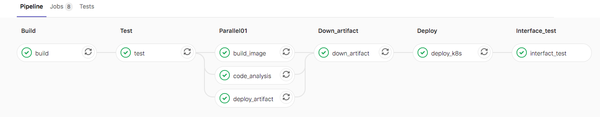
2 配置Runner 持久化构建缓存
准备工作
runner配置信息可以通过参数指定，也可以以环境变量方式设置。详细内容可以通过 gitlab-runner register -h 获取到相关参数和变量名称。
在使用官方提供的runner镜像注册runner，默认的runner配置文件在/home/gitlab-runner/.gitlab-runner/config.toml
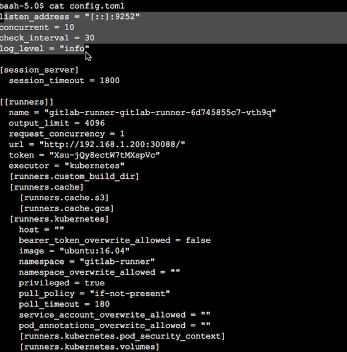
参考文档
重建gitlab-runner
values.yml
## GitLab Runner Image
##
## By default it's using gitlab/gitlab-runner:alpine-v{VERSION}
## where {VERSION} is taken from Chart.yaml from appVersion field
##
## ref: https://hub.docker.com/r/gitlab/gitlab-runner/tags/
##
image: gitlab/gitlab-runner:alpine-v12.9.0
## 镜像下载策略
imagePullPolicy: IfNotPresent
## Gitlab服务器地址
gitlabUrl: http://192.168.1.200:32220/
## runner注册token
runnerRegistrationToken: "JRzzw2j1Ji6aBjwvkxAv"
## 终止之前注销所有跑步者
unregisterRunners: true
## 当停止管道时等待其作业终止时间
terminationGracePeriodSeconds: 3600
## Set the certsSecretName in order to pass custom certficates for GitLab Runner to use
## Provide resource name for a Kubernetes Secret Object in the same namespace,
## this is used to populate the /home/gitlab-runner/.gitlab-runner/certs/ directory
## ref: https://docs.gitlab.com/runner/configuration/tls-self-signed.html#supported-options-for-self-signed-certificates
##
# certsSecretName:
## 配置最大并发作业数
concurrent: 10
## 新作业检查间隔
checkInterval: 30
## GitlabRunner日志级别 debug, info, warn, error, fatal, panic
logLevel: info
## Configure GitLab Runner's logging format. Available values are: runner, text, json
## ref: https://docs.gitlab.com/runner/configuration/advanced-configuration.html#the-global-section
##
# logFormat:
## For RBAC support:
rbac:
create: true
## Define specific rbac permissions.
resources: ["pods", "pods/exec", "secrets"]
verbs: ["get", "list", "watch", "create", "patch", "delete"]
## Run the gitlab-bastion container with the ability to deploy/manage containers of jobs
## cluster-wide or only within namespace
clusterWideAccess: false
## Use the following Kubernetes Service Account name if RBAC is disabled in this Helm chart (see rbac.create)
##
# serviceAccountName: default
## Specify annotations for Service Accounts, useful for annotations such as eks.amazonaws.com/role-arn
##
## ref: https://docs.aws.amazon.com/eks/latest/userguide/specify-service-account-role.html
##
# serviceAccountAnnotations: {}
## Configure integrated Prometheus metrics exporter
## ref: https://docs.gitlab.com/runner/monitoring/#configuration-of-the-metrics-http-server
metrics:
enabled: true
## Configuration for the Pods that that the runner launches for each new job
##
runners:
## Default container image to use for builds when none is specified
##
image: ubuntu:16.04
## Specify one or more imagePullSecrets
##
## ref: https://kubernetes.io/docs/tasks/configure-pod-container/pull-image-private-registry/
##
# imagePullSecrets: []
## Specify the image pull policy: never, if-not-present, always. The cluster default will be used if not set.
##
imagePullPolicy: "if-not-present"
## Defines number of concurrent requests for new job from GitLab
## ref: https://docs.gitlab.com/runner/configuration/advanced-configuration.html#the-runners-section
## 限制来自GitLab的对新作业的并发请求数
requestConcurrency: 1
## Specify whether the runner should be locked to a specific project: true, false. Defaults to true.
##
locked: false
## Specify the tags associated with the runner. Comma-separated list of tags.
##
## ref: https://docs.gitlab.com/ce/ci/runners/#using-tags
##
tags: "kubernetes-runner,k8s"
## Specify if jobs without tags should be run.
## If not specified, Runner will default to true if no tags were specified. In other case it will
## default to false.
##
## ref: https://docs.gitlab.com/ce/ci/runners/#allowing-runners-with-tags-to-pick-jobs-without-tags
##
runUntagged: true
## Specify whether the runner should only run protected branches.
## Defaults to False.
##
## ref: https://docs.gitlab.com/ee/ci/runners/#protected-runners
##
protected: false
## Run all containers with the privileged flag enabled
## This will allow the docker:dind image to run if you need to run Docker
## commands. Please read the docs before turning this on:
## ref: https://docs.gitlab.com/runner/executors/kubernetes.html#using-docker-dind
##
privileged: true
## The name of the secret containing runner-token and runner-registration-token
# secret: gitlab-runner
## Namespace to run Kubernetes jobs in (defaults to the same namespace of this release)
##
# namespace:
## The amount of time, in seconds, that needs to pass before the runner will
## timeout attempting to connect to the container it has just created.
## ref: https://docs.gitlab.com/runner/executors/kubernetes.html
pollTimeout: 180
## Set maximum build log size in kilobytes, by default set to 4096 (4MB)
## ref: https://docs.gitlab.com/runner/configuration/advanced-configuration.html#the-runners-section
outputLimit: 4096
## Distributed runners caching
## ref: https://gitlab.com/gitlab-org/gitlab-runner/blob/master/docs/configuration/autoscale.md#distributed-runners-caching
##
## If you want to use s3 based distributing caching:
## First of all you need to uncomment General settings and S3 settings sections.
##
## Create a secret 's3access' containing 'accesskey' & 'secretkey'
## ref: https://aws.amazon.com/blogs/security/wheres-my-secret-access-key/
##
## $ kubectl create secret generic s3access \
## --from-literal=accesskey="YourAccessKey" \
## --from-literal=secretkey="YourSecretKey"
## ref: https://kubernetes.io/docs/concepts/configuration/secret/
##
## If you want to use gcs based distributing caching:
## First of all you need to uncomment General settings and GCS settings sections.
##
## Access using credentials file:
## Create a secret 'google-application-credentials' containing your application credentials file.
## ref: https://docs.gitlab.com/runner/configuration/advanced-configuration.html#the-runnerscachegcs-section
## You could configure
## $ kubectl create secret generic google-application-credentials \
## --from-file=gcs-application-credentials-file=./path-to-your-google-application-credentials-file.json
## ref: https://kubernetes.io/docs/concepts/configuration/secret/
##
## Access using access-id and private-key:
## Create a secret 'gcsaccess' containing 'gcs-access-id' & 'gcs-private-key'.
## ref: https://docs.gitlab.com/runner/configuration/advanced-configuration.html#the-runners-cache-gcs-section
## You could configure
## $ kubectl create secret generic gcsaccess \
## --from-literal=gcs-access-id="YourAccessID" \
## --from-literal=gcs-private-key="YourPrivateKey"
## ref: https://kubernetes.io/docs/concepts/configuration/secret/
cache: {}
## General settings
# cacheType: s3
# cachePath: "gitlab_runner"
# cacheShared: true
## S3 settings
# s3ServerAddress: s3.amazonaws.com
# s3BucketName:
# s3BucketLocation:
# s3CacheInsecure: false
# secretName: s3access
## GCS settings
# gcsBucketName:
## Use this line for access using access-id and private-key
# secretName: gcsaccess
## Use this line for access using google-application-credentials file
# secretName: google-application-credentials
## Build Container specific configuration
##
builds: {}
# cpuLimit: 200m
# memoryLimit: 256Mi
# cpuRequests: 100m
# memoryRequests: 128Mi
## Service Container specific configuration
##
services: {}
# cpuLimit: 200m
# memoryLimit: 256Mi
# cpuRequests: 100m
# memoryRequests: 128Mi
## Helper Container specific configuration
##
helpers: {}
# cpuLimit: 200m
# memoryLimit: 256Mi
# cpuRequests: 100m
# memoryRequests: 128Mi
# image: gitlab/gitlab-runner-helper:x86_64-latest
## Service Account to be used for runners
##
# serviceAccountName:
## If Gitlab is not reachable through $CI_SERVER_URL
##
# cloneUrl:
## Specify node labels for CI job pods assignment
## ref: https://kubernetes.io/docs/concepts/configuration/assign-pod-node/
##
# nodeSelector: {}
## Specify pod labels for CI job pods
##
# podLabels: {}
## Specify annotations for job pods, useful for annotations such as iam.amazonaws.com/role
# podAnnotations: {}
## Configure environment variables that will be injected to the pods that are created while
## the build is running. These variables are passed as parameters, i.e. `--env "NAME=VALUE"`,
## to `gitlab-runner register` command.
##
## Note that `envVars` (see below) are only present in the runner pod, not the pods that are
## created for each build.
##
## ref: https://docs.gitlab.com/runner/commands/#gitlab-runner-register
##
# env:
# NAME: VALUE
## Configure securitycontext
## ref: http://kubernetes.io/docs/user-guide/security-context/
##
securityContext:
fsGroup: 65533
runAsUser: 100
## Configure resource requests and limits
## ref: http://kubernetes.io/docs/user-guide/compute-resources/
##
resources: {}
# limits:
# memory: 256Mi
# cpu: 200m
# requests:
# memory: 128Mi
# cpu: 100m
## Affinity for pod assignment
## Ref: https://kubernetes.io/docs/concepts/configuration/assign-pod-node/#affinity-and-anti-affinity
##
affinity: {}
## Node labels for pod assignment
## Ref: https://kubernetes.io/docs/user-guide/node-selection/
##
nodeSelector: {}
# Example: The gitlab runner manager should not run on spot instances so you can assign
# them to the regular worker nodes only.
# node-role.kubernetes.io/worker: "true"
## List of node taints to tolerate (requires Kubernetes >= 1.6)
## Ref: https://kubernetes.io/docs/concepts/configuration/taint-and-toleration/
##
tolerations: []
# Example: Regular worker nodes may have a taint, thus you need to tolerate the taint
# when you assign the gitlab runner manager with nodeSelector or affinity to the nodes.
# - key: "node-role.kubernetes.io/worker"
# operator: "Exists"
## Configure environment variables that will be present when the registration command runs
## This provides further control over the registration process and the config.toml file
## ref: `gitlab-runner register --help`
## ref: https://docs.gitlab.com/runner/configuration/advanced-configuration.html
##
# envVars:
# - name: RUNNER_EXECUTOR
# value: kubernetes
## list of hosts and IPs that will be injected into the pod's hosts file
hostAliases: []
# Example:
# - ip: "127.0.0.1"
# hostnames:
# - "foo.local"
# - "bar.local"
# - ip: "10.1.2.3"
# hostnames:
# - "foo.remote"
# - "bar.remote"
## Annotations to be added to manager pod
##
podAnnotations: {}
# Example:
# iam.amazonaws.com/role: <my_role_arn>
## Labels to be added to manager pod
##
podLabels: {}
# Example:
# owner.team: <my_cool_team>
## HPA support for custom metrics:
## This section enables runners to autoscale based on defined custom metrics.
## In order to use this functionality, Need to enable a custom metrics API server by
## implementing "custom.metrics.k8s.io" using supported third party adapter
## Example: https://github.com/directxman12/k8s-prometheus-adapter
##
#hpa: {}
# minReplicas: 1
# maxReplicas: 10
# metrics:
# - type: Pods
# pods:
# metricName: gitlab_runner_jobs
# targetAverageValue: 400m
## 更新
helm upgrade gitlab-runner --namespace gitlab-runner ./gitlab-runner
跑一个传统的打包流水线
.gitlba-ci.yaml
image: maven:3.6.3-jdk-8
before_script:
- ls
services:
- name: mysql:latest
alias: mysql-1
build:
image: maven:3.6.3-jdk-8
stage: build
tags:
- k8s
script:
- ls
- sleep 2
- mvn clean package -DskipTests
- sleep 10
deploy:
stage: deploy
tags:
- k8s
script:
- echo "deploy"
environment:
name: production
ur: http://www.baidu.com
下载依赖包将会花费大量的时间
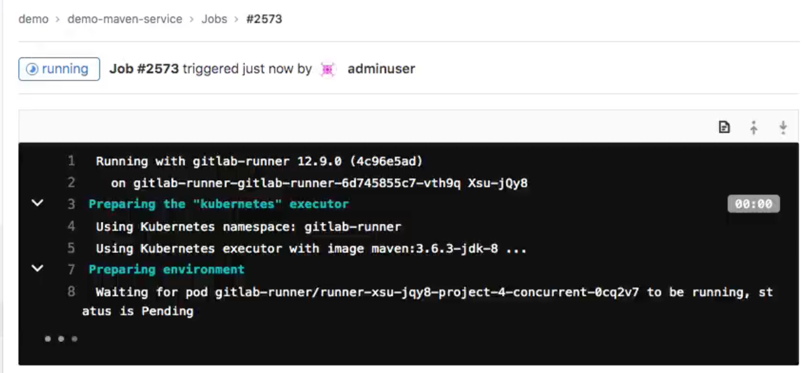
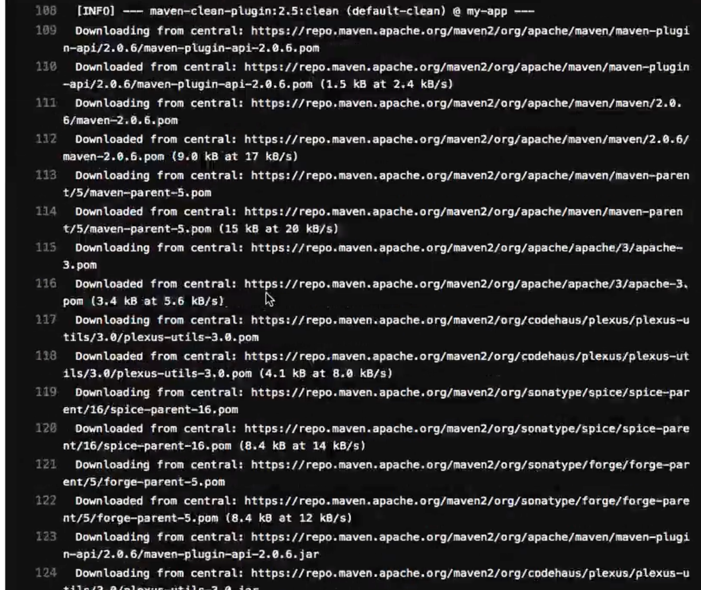
解决构建缓存问题
所谓的构建缓存就是我们在进行maven/npm等构建工具打包时所依赖的包。默认会在私服中获取，加快构建速度可以在本地缓存一份。
在此，我们需要创建PVC来持久化构建缓存，加速构建速度。为了节省存储空间决定不在每个项目中存储构建缓存，而是配置全局缓存。
准备本机缓存目录
/opt/ci-build-cache
[ci-build-cache]# ls
builds maven
首先，创建一个PVC用于挂载到pod中使用。
buildcache-pvc.yml
apiVersion: v1
kind: PersistentVolume
metadata:
name: ci-build-cache-pv
namespace: gitlab-runner
labels:
type: local
spec:
storageClassName: manual
capacity:
storage: 10Gi
accessModes:
- ReadWriteOnce
hostPath:
path: "/opt/ci-build-cache"
---
apiVersion: v1
kind: PersistentVolumeClaim
metadata:
name: ci-build-cache-pvc
namespace: gitlab-runner
spec:
storageClassName: manual
accessModes:
- ReadWriteOnce
resources:
requests:
storage: 5Gi
使用命令查看验证
kubect1 create -f buildcache-pvc.yml
# kubectl get pvc -n gitlab-runner
NAME STATUS VOLUME CAPACITY ACCESS MODES STORAGECLASS AGE
ci-build-cache-pvc Bound ci-build-cache-pv 10Gi RWO manual 5h41m
vc准备好了，考虑到不能每次部署runner都手动挂载pvc，需要自定义gitlab-runner chart，优化runner配置。
- 第一步：编辑value.yml文件，添加构建缓存信息配置。
gitlab-runner/value.yml
## configure build cache
cibuild:
cache:
pvcName: ci-build-cache-pvc
mountPath: /home/gitlab-runner/ci-build-cache
第二步：编辑templates/configmap.yml文件，entrypoint部分添加runner配置。在start之前添加，这样runner在创建构建pod的时候会根据配置挂载pvc。
...
# add build cache
cat >>/home/gitlab-runner/.gitlab-runner/config.toml <<EOF
[[runners.kubernetes.volumes.pvc]]
name = "{{.Values.cibuild.cache.pvcName}}"
mount_path = "{{.Values.cibuild.cache.mountPath}}"
EOF
# Start the runner
exec /entrypoint run --user=gitlab-runner \
--working-directory=/home/gitlab-runner
到此gitlab-runner chart部分配置就完成了，接下来可以通过Helm命令进行创建和更新了。
helm install gitlab-runner04 ./gitlab-runner --namespace gitlab-runner
helm upgrade gitlab-runner04 ./gitlab-runner --namespace gitlab-runner
使用以上命令部署完成后，可以在gitlab admin页面和k8s面板查看runner的状态，确保部署成功。查看pod配置。
cat /home/gitlab-runner/.gitlab-runner/config.toml
....
[[runners.kubernetes.volumes.pvc]]
name = "ci-build-cache-pvc"
mount_path = "/home/gitlab-runner/ci-build-cache"
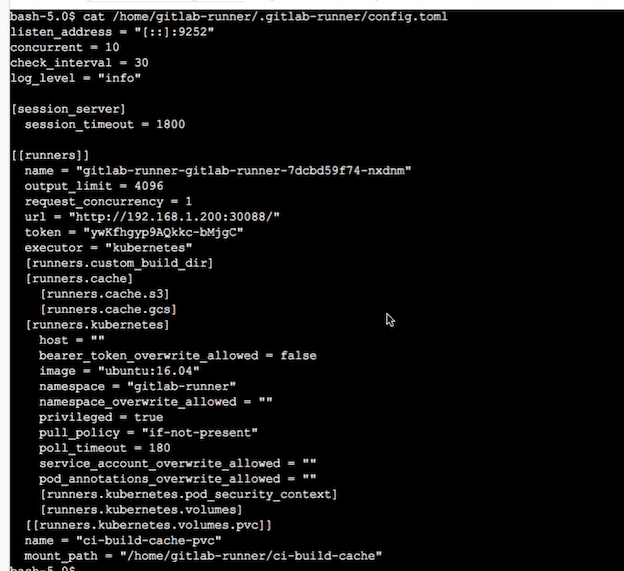
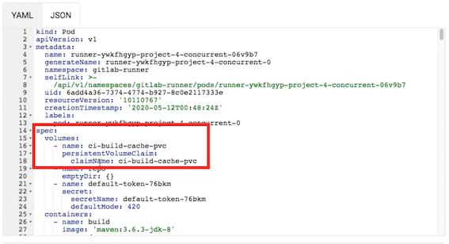
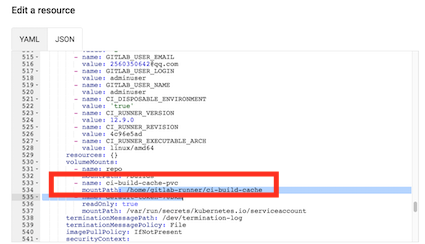
部署完成了，后续使用构建工具打包时添加指定缓存目录。例如：maven
mvn clean package -DskipTests -Dmaven.repo.local=/home/gitlab-runner/ci-build-cache/maven
.gitlba-ci.yaml
image: maven:3.6.3-jdk-8
before_script:
- ls
services:
- name: mysql:latest
alias: mysql-1
build:
image: maven:3.6.3-jdk-8
stage: build
tags:
- k8s
script:
- ls
- sleep 2
- mvn clean package -DskipTests -Dmaven.repo.local=/home/gitlab-runner/ci-build-cache/maven
- sleep 10
deploy:
stage: deploy
tags:
- k8s
script:
- echo "deploy"
environment:
name: production
ur: http://www.baidu.com
发现构建速度很快证明已经完成构建缓存配置。可以配合查看本地缓存目录是否有更新。
会产生一个新的runner 而非原来的gitlab-runner
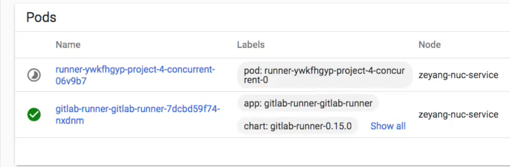
cd /ci-build-cache/maven
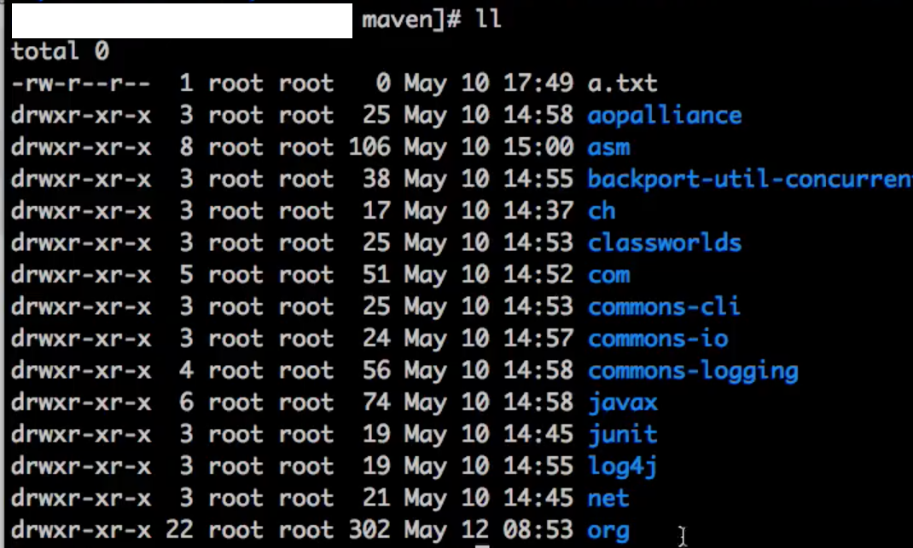
打包可以快速结束
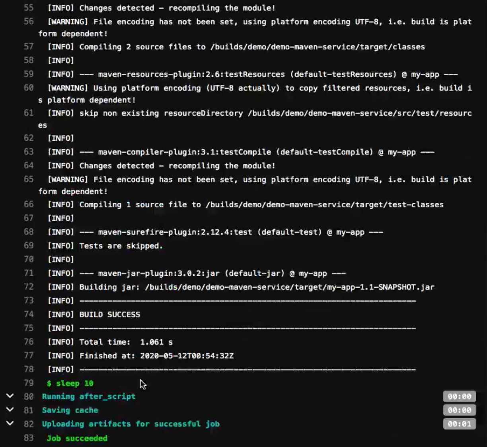
3 解决构建制品问题
在kubernetes中对cache支持一般，我们可以使用artifacts进行代替。但是考虑到artifacts收集制品会占用存储空间，所以准备研究下如何配置统一的缓存。实际上我们可以将repo目录做成持久化。
...
build:
image: maven:3.6.3-jdk-8
stage: build
tags:
- k8s
script:
- ls
- sleep 2
- mvn clean package -DskipTests -Dmaven.repo.local=/home/gitlab-runner/ci-build-cache/maven
- ls target/
test:
image: maven:3.6.3-jdk-8
stage: test
tags:
- k8s
script:
- ls target/
- sleep 2
- mvn test -DskipTests -Dmaven.repo.local=/home/gitlab-runner/ci-build-cache/maven
- sleep 10
Test之前已经被clean掉了， test失败
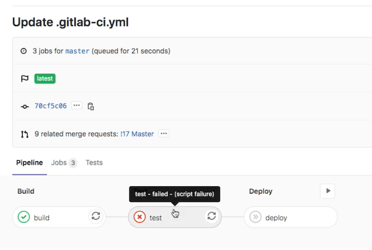
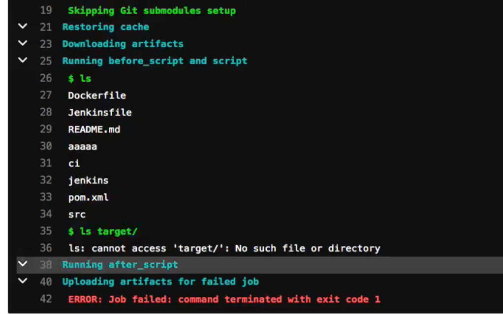
demo-maven-service
test:
variables:
GIT_CHECKOUT: "false"
image: maven:3.6.3-jdk-8
stage: test
tags:
- k8s
script:
- ls target/
- sleep 2
- mvn test -DskipTests -Dmaven.repo.local=/home/gitlab-runner/ci-build-cache/maven
- sleep 10
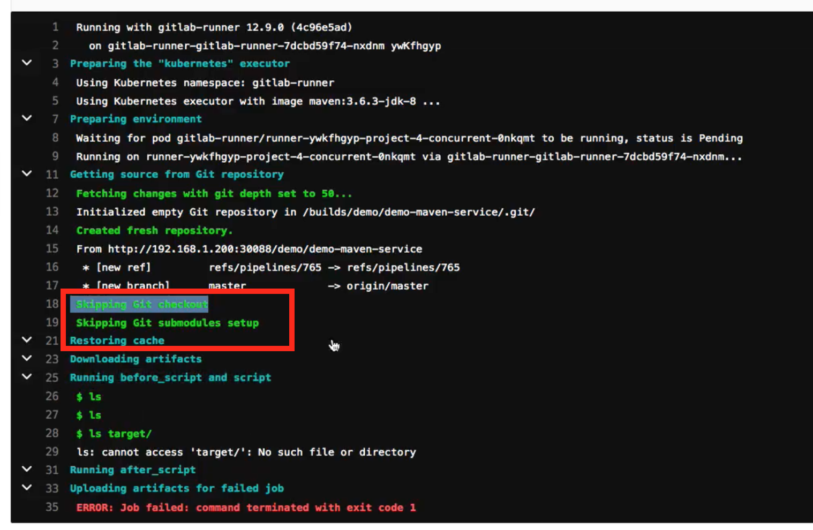
经过测试，在使用kubernetes执行器创建的构建pod会默认挂载一个空目录。
此目录用于存储每次下载的代码，因为是空目录的原因导致后续测试pod无法获取需要重新下载代码，这还不要紧，重要的是构建生成的文件target目录都不存在了导致后续步骤接连失败。

由于yaml文件都是有官方默认配置的，问题不好定位。这其实是个两年前的问题了。 https://gitlab.com/gitlab-org/gitlab-runner/-/issues/3148 。最后经过分析直接将持久化的pvc挂载到空目录中的某个目录中。
需要配置runner自定义构建目录，但是构建目录必须是在$CI_BUILD_DIRS目录里面。

准备本地的工作目录
/opt/ci-build-dir
创建repo持久化pvc
apiVersion: v1
kind: PersistentVolume
metadata:
name: ci-build-dir-pv
namespace: gitlab-runner
labels:
type: local
spec:
storageClassName: manual
capacity:
storage: 10Gi
accessModes:
- ReadWriteOnce
hostPath:
path: "/opt/ci-build-dir"
---
apiVersion: v1
kind: PersistentVolumeClaim
metadata:
name: ci-build-dir-pvc
namespace: gitlab-runner
spec:
storageClassName: manual
accessModes:
- ReadWriteOnce
resources:
requests:
storage: 5Gi
使用命令验证
# kubectl get pvc -n gitlab-runner
NAME STATUS VOLUME CAPACITY ACCESS MODES STORAGECLASS AGE
ci-build-cache-pvc Bound ci-build-cache-pv 10Gi RWO manual 6h41m
ci-build-dir-pvc Bound ci-build-dir-pv 10Gi RWO manual 3h11m
values.yaml
- 编译
values.yaml文件添加注册配置变量。 RUNNER_BUILDS_DIR定义构建目录。CUSTOM_BUILD_DIR_ENABLED开启自定义构建目录配置。
envVars:
- name: RUNNER_BUILDS_DIR
value: "/home/gitlab-runner/ci-build-dir/"
- name: CUSTOM_BUILD_DIR_ENABLED
value: true
添加repo目录缓存配置，我们把自定义的构建目录放到默认构建目录的下面builds目录中。
## configure build cache
cibuild:
cache:
pvcName: ci-build-cache-pvc
mountPath: /home/gitlab-runner/ci-build-cache
builds:
pvcName: ci-build-dir-pvc
mountPath: /home/gitlab-runner/ci-build-dir/builds
编辑templates/configmap.yml
gitlab-runner/templates/configmap.yaml
# add build cache
cat >>/home/gitlab-runner/.gitlab-runner/config.toml <<EOF
[[runners.kubernetes.volumes.pvc]]
name = "{{.Values.cibuild.cache.pvcName}}"
mount_path = "{{.Values.cibuild.cache.mountPath}}"
[[runners.kubernetes.volumes.pvc]]
name = "{{.Values.cibuild.builds.pvcName}}"
mount_path = "{{.Values.cibuild.builds.mountPath}}"
EOF
更新runner
helm install gitlab-runner04 ./gitlab-runner --namespace gitlab-runner
helm upgrade gitlab-runner04 ./gitlab-runner --namespace gitlab-runner
bash-5.0$ cat /home/gitlab-runner/.gitlab-runner/config.toml
[[runners]]
name = "gitlab-runner-gitlab-runner-7dcbd59€74-nxdnm
output limit = 4096
request_concurrency = 1
url = "http://192.168.1.200:30088/"
token = "ywKfhgyp9AQkkc-bMjgC"
executor = "kubernetes"
builds_dir = "home/gitlab-runner/ci-build-dir/"
[runners.custom_build_dir]
enabled = true
[runners.cache]
[runners.cache.s3]
[runners.cache.gcs]
....
[[runners.kubernetes.volumes.pvc]]
name = "ci-build-cache-pvc"
mount_path = "/home/gitlab-runner/ci-build-cache"
[[runners.kubernetes.volumes.pvc]]
name = "ci-build-cache-pvc"
mount_path = "/home/gitlab-runner/ci-build-dir/builds"
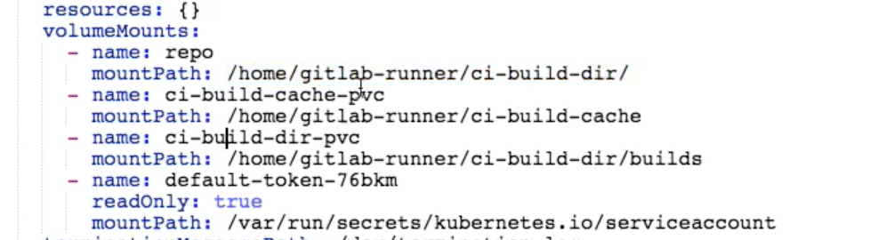
.gitlab-ci.yaml
variables:
GIT_CLONE_PATH: $CI_BUILDS_DIR/builds/$CI_PROJECT_NAMESPACE/$CI_PROJECT_NAME/$CI_PIPELINE_I
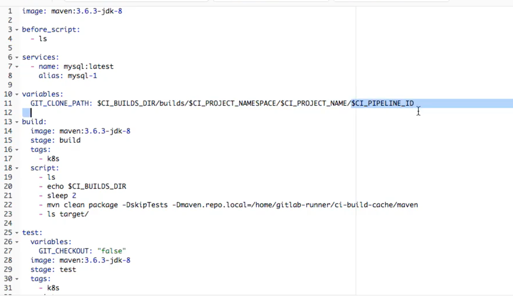
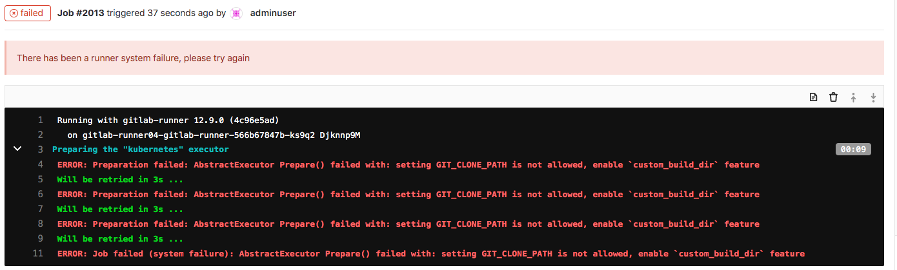
经过测试在本地的pv中能够看到，下载的代码文件。但是默认每次每个job运行的时候都会获取远程最新的代码，会把构建目录删除掉，此时就需要配置git checkout策略了。其实按照我们目前的场景，不需要每个作业都下载代码。只要第一个作业下载好最新的代码，然后运行流水线即可。当在运行流水线的过程中遇到新代码提交可以放到下次流水线执行。
需要在ci文件中定义GIT_CHECKOUT变量，默认值为true，即每次都需要代码下载。我们将全局配置为false然后在build作业中配置为true。也就实现了只在build作业下载最新代码了。
GIT_CHECKOUT: "false"
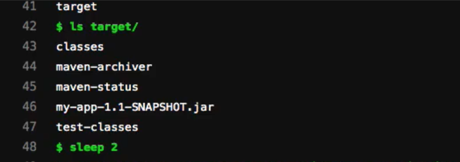
- 参考链接：http://s0docs0gitlab0com.icopy.site/ee/ci/yaml/README.html#git-checkout